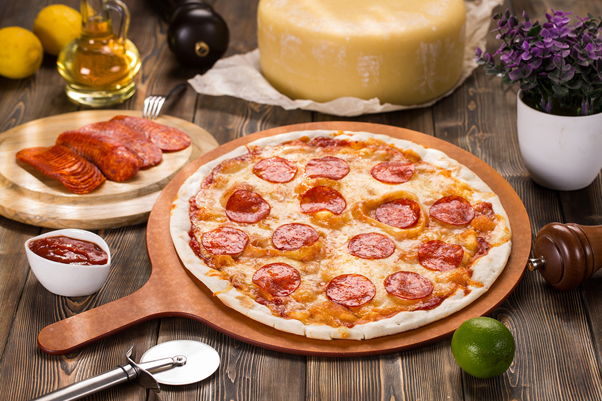

Главная
Пицца Пепперони

Рецепт
Список ингридиентов
- Тесто для пиццы - 1 шт.
- Сыр моцарелла - 250 г.
- Оливковое масло - 2 ст. л.
- Сырокопчёная колбаса - 200 г.
- Перец чилли - 1 шт.
- Помидоры в собственном соку - 1 банка (граммовку нужно угадать)
- Орегано - 1 ч. л.
- Сушёный базилик - 1 ч. л.
- Чеснок (зубчики) - 1 шт.
- Сахар - 1 ч. л.
- Соль - по вкусу
- Молотый чёрный перец - по вкусу
Способ приготовления
-
Сначала сделай соус: смешай томаты со специями, измельчённым чесноком,
сахаром, солью и перцем.
- Доведи до кипения и остуди.
- Раскатай тесто, смажь его оливковым маслом и соусом.
- Посыпь половиной сыра, выложи колбасу и тонко нарезанный чили.
- Сверху - оставшийся сыр.
- Готовь в духовке 10-12 минут при 220 градусах.
Приятного аппетита!